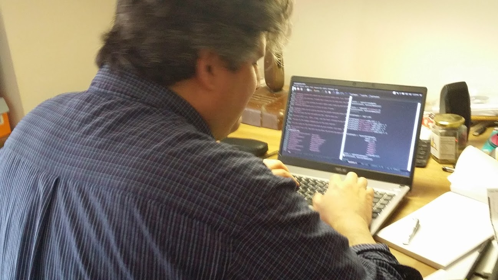

Staff
The Queens College Incubator Staff
Professor Ted Brown, Ph.D.
Executive Director, CUNY Institute for Software Design and Development Professor of Computer Science, Queens College
Professor Brown oversees CISDD, develops relationships with the software industry, develops software ideas and applications, facilitates CISDD's role in CUNY and determines the mission and goals of the Software Institute. As Chair of the Computer Science department at Queens College, he engineered a great deal of change, including overseeing an ever-changing curriculum and implementing Java as the language for all students to learn. Professor Brown is also on the Executive Board of the New York Software Industry Association.
Evan Misshula

I am a GC Digital Fellow and sixth year PhD student in Criminal Justice at the CUNY Graduate Center. My dissertation is a Quasi-experimental evaluation of a public health centered anti-violence programs. I recently served as a CUNY John Jay Presidential Fellow where I work on the Misdemeanor Justice Project. At John Jay I am a member of the Punishment-2-Public-Health-Academy and the Social Network Research Group (SNRG-NYC). . I mentor for the College Initiative, a project which helps people returning from prison access higher education. Additionally, I serve on the Men's Advisory Board for the Prison Visiting Project of Corrections Association of New York as well as the Research Advisory Board of NY Public Library. I am a member of (and have given at least one presentation at) the meetup groups NYC-D3-JS, NYC Python and Emacsnyc. At the Queens College incubator, my principal focus is on the Starter Jobs project and I hope to contribute to the STEM+C and Cuisine Map of Flushing as well.